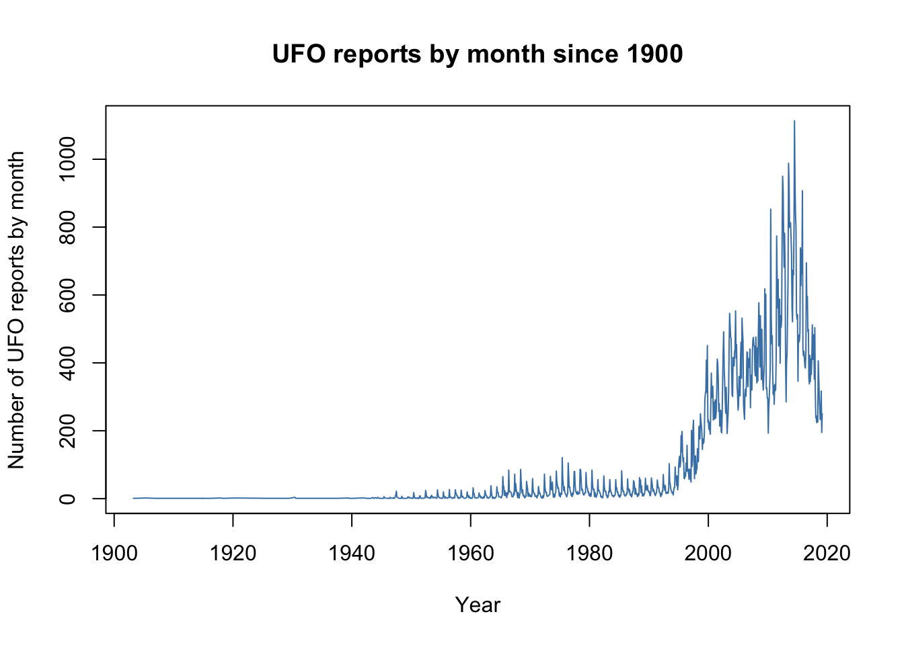

Chapter 6 R scripts and your R workflow
6.1 Writing and using R scripts
Up until now we’ve been thinking about using R simply by typing commands directly into the console. That works, of course, but if you have more than one line of code or if you have long function calls with lots of arguments it can get tricky. Once you’re out of the R equivalent of short trousers then it’s much better to write your code in a separate editor and then pass the code along to the console when you want it to be run. This brings many benefits:
- If you are writing something with more than about two lines of code there will be errors, and it’s much easier to fix them in a text editor. Using a script written in a text editor means that if there is a mistake you just fix it and resubmit your code. If there’s a mistake in text that you’re typing into the console, well you just have to type it all in again, and hope not to make any other mistakes.
- You can edit your code much more easily than you can in a console window. This is quickly going to become important since for almost anything beyond some sorts of basic analysis you’ll be using several lines of code, at least. Writing and editing it in a proper editor gives you access to all the features that are there to make it easy to write and edit text. Features like Find & Replace or Copy & Paste are universal, but with a decent text editor designed for code you’ll also get piles of other goodies. Thes include, amongst others, syntax highlighting, whereby the editor colours the different parts of your code to indicate what they are: for example, character strings in green and function names in red; code folding which allows you to hide sections of code which you’re happy with and focus on the rest; custom keybindings so that you can specify particular keystroke combinations to carry out common tasks or insert commonly used pieces of text and bracket matching which indicates pairs of brackets or parentheses in your text. The last is especially useful in R because R code can often end up with multiple layers of nested brackets and if one is missing it can take a long time to untangle the mess.
- You can save your script, and then you can come back later and easily replicate your analysis or redraw your graphs. This is hugely important. Really really important. I can’t begin to say how important it is. If you don’t understand why this is important now, you will.
- You can add annotations to your script. These are notes written into the script with a special character which tells R not to pay any attention to them (
#). These are also really really important because when you come to re-run your code sometime after you wrote it it is the annotation which will tell you how it works.
Here’as an example of an R script which will download a dataset of monthly counts of UFO reports, originally from the National UFO Reporting Center in Eastern Washington State and plot the numbers reported each month since 1900. Don’t worry if you don’t understand the code, that’s not important. The things to notice are that there is syntax highlighting, with different components of the code in different colours and there are comments in the code to explain what it is all doing.
# Script to read data on UFO reports and plot the data since 1900
# Audrey Bloggs 25th December 2022
# Load data from website
UFO <- read.csv("http://www.introductoryr.co.uk/UFO_data.csv",
stringsAsFactors = FALSE)
# Convert 'Reports' variable to date
UFO$Reports <- as.Date(UFO$Reports, format = "%d/%m/%Y")
# Trim off dates before 1900 which have a different format and convert to NA
UFO <- UFO[which((!is.na(UFO$Reports))), ]
# Check the data structure
str(UFO)
# Plot the data
plot(UFO$Count ~ UFO$Reports,
type = 'l',
col = "steelblue",
xlab = "Year",
ylab = "Number of UFO reports by month",
main = "UFO reports by month since 1900")You can run this script yourself. At this point, try just copy-and-pasting the whole lot into the R console. Assuming your computer is connected to the internet it will download the data. You’ll see some code and some output in the console window, and it’ll draw you a graph that should look like this:

6.2 Running code from an R script window
If you want to edit text for an R script you can do a perfectly good job with the built in script editors that ship with the Mac and Windows versions of R. The Mac script editor is good and although it’s not a full-featured coding text editor it’s very useable. The script editor that comes with the Windows version is a bit basic by comparison with the Mac version but is still perfectly usable. If you don’t want to use the built in editors, or if you’re using the R on Linux which doesn’t have a built-in editor, you can use a basic text editor like Microsoft Notepad, TextEdit which comes with MacOs or Gedit, Nano or any of the other basic editors that come with assorted Linux distros. Hell, you can even use MS Word to edit your R scripts if you must. If you’re just starting out and you’re not going to be writing long or complex scripts you don’t need an all-singing all-dancing professional coding text editor, and for the moment I would recommend the built in script editors because these have the advantage that you can pass code over to the console with a keystroke.
Let’s see how to do this using the script for UFO data we saw above. Assuming you’re using Windows or a Mac, open a new script window. To open a script editor window on a Mac just select “New document” under the “File” pull-down menu, or press ⌘ Nsimultaneously. On a windows machine click “New script” under the “File” pull down menu. If you’ve jumped the gun a little and you’re using RStudio, pull down the File menu, click on New File and then on R Script. Copy and paste in the code from the example script, or type it in yourself if you prefer. Save it straight away. Put it in a suitable directory (folder) and call it UFOscript. It will be saved with the extension .R indicating that it’s an R script, so it will be called UFOscript.R
Now highlight all of the text with your mouse, or select all using a keystroke (⌘ Aon a Mac or Windows-A on a PC). Now, if you’re on a Mac, press ⌘ enter together. On a Windows machine, press the Windows key and R together. Your code should appear in the R console window and you should get the plot of UFO sightings over time again. As well as sending the whole script’s worth of code in one go, you can highlight smaller blocks of code or individual lines and send them to the console with the same keystrokes.
Now, let’s say that you’ve drawn your plot of UFO sightings, but your friends at UFO club don’t want to put the plot in the latest UFO report because they don’t like the colour the line is drawn in. You can simply edit your script and run it again to get a new graph. Try changing the word steelblue to darkgreen on the fourth to last line of the script. Make sure the quote marks stay there. Now highlight the block of code beginning with plot and send it to the console again. You should have a new graph with the line of data shown in dark green.
6.3 Running code from files using source()
You can also run scripts in R directly from a file by using the source() function. You can do this using the source() function and giving the file path to UFOscript.R. On a Mac this might read:
if you’ve put UFOscript.R in a directory called R_scripts that is in your home directory. On a windows computer it might look like this:
if you’ve put UFOscript.R in a directory called R_scripts which is itself in a Documents directory on the C: drive.
If you don’t know what I mean by a file path, or if you just can’t be bothered to type it out, try:
which should give you a mouse clicky dialogue box in which you can navigate to UFOscript.R.
Whichever of the above you choose, you should get the same result. The graph you saw before will be drawn again, but you won’t see any code appearing in the console window. This might be what you want, or it might not: as an example, you might want to see the information returned after the str() function call. If you want to see all or part of the code and the output, you have two options. Firstly, adding the argument echo = TRUE to the source() function call, like this:
will write all the code and the output to the console window, just like when you sent the code straight across from the script window. Alternatively, if you just want some of the code or output, but not all of it, you can use the print() function within your script. Try editing your script so that the line
now reads:
and leave everything else as it was. We’ve wrapped the str(UFO), which shows us the structure of the UFO object, in the brackets from our print() function. If you save this and source() it you should see that as well as the graph you now get the str() output in the console, but none of the other gubbins.
6.4 Workflow structure, or what should I put in my script?
Let’s think a little about reproducibility. If you just stick with the popular image of science you might think that it’s normal to get some data, run an analysis, quickly bang off a report (or, more likely, use your new analysis to invent a new vaccine overnight) and never look at any of it again. Ask anyone who works in research how often they do this and you’re likely to be met with either laughter or incomprehension, and this holds for people working with data in any area, not just science. In my field at least it is normal to find yourself revisiting data and analyses that you haven’t looked at for many months or years, and when you do go back to those data you want to be able to reproduce the analysis you did before exactly, and you want to understand what you did and why you did it. It’s important, therefore, to be able to reproduce your entire analysis from your script. Ideally, you also want someone else to be able to reproduce your analysis and to understand it — this might be because you are collaborating with other people, or because you are publishing your research and you want others to be able to reproduce it. This latter is becoming an important concept: what’s called reproducible research is something that originated in computer science but is now establishing itself elsewhere, forexample in ecology as demonstrated by the British Ecological Society‘s guide to reproducible code. You might read this and think that it doesn’t apply to you because you’re a student who isn’t planning to work in research and will never be in the be in the business of inventing new vaccines overnight, or someone who just needs to plot some graphs, but you should still aim for good, reproducible R scripts. If you don’t believe me then the first time someone asks you to redraw a graph and make ’just a couple of minor changes’ more than a weekend after you made the original then you’ll understand.
Assuming that you are analysing data, this would include:
- importing the raw data
- data cleanup if necessary
- exploratory analysis and visualisation
- your final analysis
- final data visualisations which you will put in your report or paper.
This way you can reproduce everything just by running your script. Believe me, this is an excellent and simple way to make a reproducible record of your analysis. You might be tempted by alternatives such as saving the workspace with all the objects you’ve generated and copying bits of code and bits of output into a document, but if done badly this approach can be disastrous and if done well it will be more time consuming than just writing a good script, it will be more complicated and you will find it harder to keep track of all the things that are generated. In case the message isn’t clear, write a script.6
6.5 Keep it neat — making your script easy to read
Go online and do a search for “code writing tips” or “best practice for writing code” and you’ll find rather more advice than you might want, and much of it will be written for experienced, hardcore coders. Some of this will have more focus on questions like “should you put an opening curly bracket on the same line as a fnction definition, or on the next line?,”7 and if you are just starting out this might be a little too much. So, here are some basic top tips for writing scripts that aren’t horror shows.
Give your objects sensible names that let you know what they are. This makes it much easier to understand what’s going on, especially in long and complicated scripts.
Be consistent in how you name objects. Remember that R is case sensitive, so
Variable1is different fromvariable1. I’d say it’s probably best to just stick to lower case all the time to avoid confusion. If you have multiple words in an object name you can separate them using underscoresmy_variableor dotsmy.variable, or camelCasemyVariable. If you look on the internet you’ll find conflicting views as to which is best: the Google style guide for R says not to use underscores and that using dots is preferable, whereas Hadley Wickham’s guide in Advanced R recommends using underscores. I’d say that it doesn’t really matter which one you use but it’s best to pick one and stick with it.
UFO <- read.csv("http://www.introductoryr.co.uk/UFO_data.csv",
stringsAsFactors = FALSE)
log_ufo_count <- log(UFO$Count)is much better than
data <- read.csv("http://www.introductoryr.co.uk/UFO_data.csv",
stringsAsFactors = FALSE)
v1 <- log(UFO$Count).
Use plenty of whitespace to make things more readable.
Write short lines and when your lines are long, spread them over multiple lines and indent them. When you pass R a line of code, it looks to see whether the line it has is cmplete — whetehr it makes sense in itself as an R instruction. If it is not complete, it will look on the next line and read that, until it either ends up with an instruction that makes sense, or it runs out of lines. If the latter it will prompt you to finish off the code by replacing the
>symbol in the console with a+, indicating that it needs some more. I usually see this when I’ve missed out a closing bracket. Because R has this ability to look for stuff that completes an instruction, you can split function calls over multiple lines. This really makes function calls with lots of arguments much easier to read: I recommend going to a new line every time you have more than two or three arguments to one function call. Here’s an example. This will draw the UFO data from before but with a non-parametric smooth line drawn in red.You can see that for theplot()and thelines()functions I’ve spread the code out over multiple lines, with one argument on each line, and after the first line the remaining lines for each argument are indented, making everything very clear. There is space between each line, making things even clearer.
loess_fit <- loess(UFO$Count ~ as.numeric(UFO$Reports), span = 0.2)
plot(UFO$Count ~ UFO$Reports,
col = "steelblue",
type = "l",
xlab = "Year",
ylab = "UFO reports")
lines(UFO$Reports, loess_fit$fitted,
col = "darkred",
lwd = 2)
title(main = "UFO reports by month since 1900")This code is much easier to read than squashing it all together:
loess_fit <- loess(UFO$Count ~ as.numeric(UFO$Reports), span = 0.2)
plot(UFO$Count ~ UFO$Reports, type = "l", xlab = "Year", ylab = "UFO reports")
lines(UFO$Reports, loess_fit$fitted, col = "darkred", lwd = 2)
title(main = "UFO reports by month since 1900")How you do your indenting depends on the particular editor you’re using. If you’re using the Mac R script editor then you can indent your text using the space bar or the tab key8, and then whenever you press enter the text will stay indented until you reach a line where you want to go back to the margin, at which point you can use the delete key to do so. Many coding-oriented text editors, including the RStudio script editor, will automatically indent text for you if you press enter while you’re inputting code so long as the code you’re putting in isn’t a complete instruction. Once it detects that it is it will go back to the margin for you. If you’re using some other editors you might have to do your indenting by hand.
- Use spaces. This makes a big difference. Before and after things like
=signs, after commas but not before (just like in normal writing), you get the picture I’m sure.
6.6 “I wish I hadn’t commented my code so much”, said no-one, ever.9
When you run your code, R will ignore anything on a line that comes after a #, allowing you to add comments to your script. You can use comments in your script to
- explain what the script does, who wrote it and when,
- divide the script up into logically sensible sections,
- explain to any reader what particular pieces of code do, and
- indicate sections of code which still need work.
You can also use commenting to stop particular lines or blocks of code from running, by adding the comment symbol at the start of lines of R code.
You can see an example of commented code in the UFO script above, and here is an example of another script from Audrey with comments.
# Script for generating boxplot of random numbers by 2-level factor
# Audrey Bloggs, 31st February 2020
#Generate 80 random numbers
response <- rnorm(80, mean = 5, sd = 1)
#Generate factor with two levels
factor_x <- factor(rep(c("Red", "Green"), each = 40))
#Draw boxplot using 'plot'
#plot(factor_x, response, col = "goldenrod3")
#Draw boxplot using 'boxplot'
boxplot(response ~ factor_x,
xlab = "Factor X",
ylab = "The response",
main = "Responses to factor X",
bty = "l", # Sets box around the plot to bottom and left sides only
cex.main = 0.8, # Makes the main title text smaller
col = "goldenrod3")You can see that Audrey has started with a block of commented lines giving some information about the purpose, maker and date of the script, and then we have a comment for each piece of code saying what it does. There is also a line of code which is commented out, meaning that it has a # symbol in front of it and will not run. Finally, if you look at the last piece of code beginning boxplot(Y1~X1) you can see that there are some in-line comments to remind the reader what specific arguments to the boxplot() function are doing.
You’ve probably noticed that Audrey has only added comments to some of the arguments to boxplot(), and has left some others without comments. This is because she doesn’t need reminding what xlab = "Factor X" or col = "goldenrod3" mean, and she’s confident that anyone reading her script will know this as well. This leads us on to the question of how detailed you should be in your commenting. If you ask the internet about this you’ll get a lot of answers, and you’ll come across the idea that ‘good code is self documenting’ — in other words you should be able to read a script and work out what it’s doing without needing much in the way of comments. This is fine for professional coders, and if you are one then that’s nice, but if you are only just starting out and still very much on the steep bit of the learning curve then you might need a little more. My philosophy is that you should think about the reader: how much information do you need so that you and anyone else who is likely to read your script can easily understand it and work out what it does? Intimately familiar with the language and writing code that’s only going to be written by other people who know it to a similar degree? Keep your comments to a minimum and let your clean, self-documenting code speak for itself. Just starting out and still having trouble remembering the difference between a vector and a matrix? By all means add as much explanation to your script as you need. Equally, if you are a true coding ninja and speak R better than you speak your native language but you are writing a script that will be used by first year students who are new to the language,10 then you should probably put in a lot more comments than you would normally do so that the people reading and using your script can understand it.
6.7 Using RStudio to write scripts
The question of ‘what text editor should I edit my code in’ is something that has given rise to endless debate among programmers… to put it mildly. We won’t go into the specialist world of text editing software used by professional coders here aside from noting that there are many options, from the über-nerdy Emacs or vi through to more recent options such as Sublime text, my personal favourite, or GitHub’s Atom editor. If you’re interested in a third party editor just for R there are many possible options: just Google “R script editor” to get more recommendations and opinions than you probably want. TinnR is popular for Windows users, and there are two more GUI oriented options: Rcmndr which actually installs as an R package (more on these later) and Rkward on for Linux, Windows or Mac. The Big Dog, however, is RStudio which has a series of windows including a script editor and a console. The excellent built in script editor and the ease of use of RStudio means that it’s very popular nowadays, to the point that we’ll devote a whole chapter to an introduction to some of its best features later on.
See Hurlbert, S.H. (1984) Pseudoreplication and the design of ecological field experiments. Ecological Monographs 54:187–211. http://dx.doi.org/10.2307/1942661 for the classic paper on this.↩︎
NB for our friends from across the Atlantic: ‘tarted up’: 1. - adj. - wearing an excessive amount of make up, a minimal amount of clothing; ostensibly for the purpose of luring a partner into the act of sexual intercourse. Usually reserved for females, but not as a rule. (www.urbandictionary.com)↩︎
Be warned, some people have Very Strong Opinions regarding whether you should use spaces or tabs for indentation. I suppose that it’s nice that they have a hobby.↩︎
Well, hardly anyone, hardly ever.↩︎
Or for that matter by a senior professor of biochemistry…↩︎